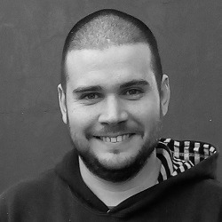

Acerca De Mi
Quiero contarte algunas cosas...

David Lipshitz
Soy un Front End Developer trabajando mayormente con React. Estoy participando activamente en proyectos y grupos de estudio de la comunidad FrontEnd Cafe Empecé estudiando Ingeniería en Sistemas en la UAI y tengo cursos completos en EducacionIT y Udemy, pero con el tiempo me di cuenta que lo que mas me hizo crecer como desarrollador (y también como persona) fueron las comunidades como freeCodeCampBA y FrontEnd Cafe, lo que me hizo tomar el gusto por colaborar y participar en proyectos comunitarios. No dudes en contactarme si crees que puedo ayudarte.